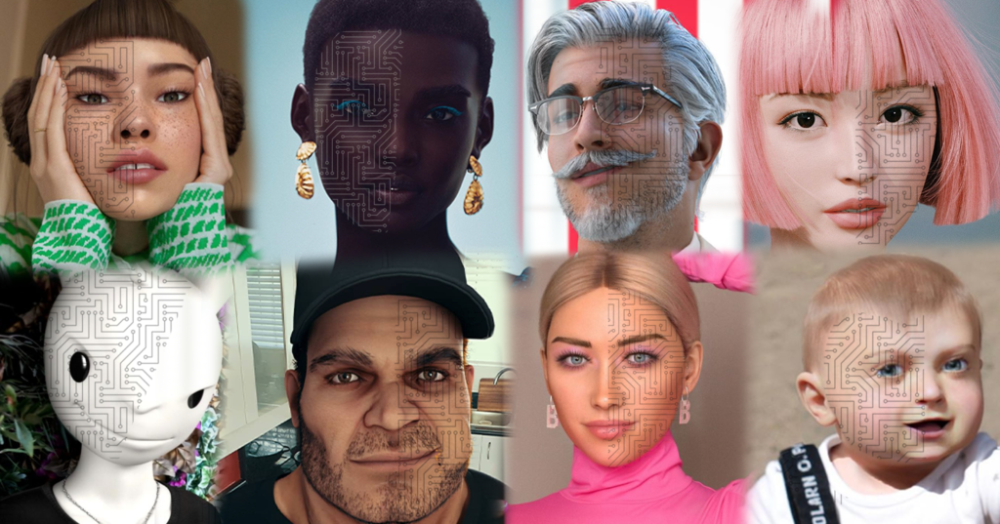

Could a Virtual Persona Replace Real Influencers?
In the ever evolving world of influencer marketing, brands are no longer limited to partnering with human personalities. The AI generated influencer is a virtual persona powered by algorithms, designed to emulate the aesthetic, behavior, and social impact of a real person. These personas, like Lil Miquela and Imma, are gaining massive followings, scoring brand deals, and sparking a provocative question: Could AI generated influencers eventually replace real ones?
This blog post will explore how these virtual influencers are created, their impact on marketing strategies, and the implications for the future of digital branding.
Meet the AI-Generated Influencer
Lil Miquela, arguably the poster child of virtual influencers, debuted on Instagram in 2016. Designed by the startup Brud, Lil Miquela is a computer generated Brazilian American “19-year-old” who wears Prada, advocates for social justice, and drops pop singles. With over 2 million followers, she’s modeled for Calvin Klein, appeared in Vogue, and collaborated with brands like Samsung and UGG.
But Lil Miquela isn’t the only one. Japan’s Imma, South Korea’s Rozy, and China’s Ayayi are all part of a growing wave of virtual influencers who are blurring the line between fiction and reality.
How Do AI Influencers Actually Work?
Despite being branded as “AI,” many virtual influencers are currently a hybrid of human creativity and machine learning. While some aspects, like facial animation, tone, and narrative decisions, are designed by creative teams, others are increasingly guided by data.
Here’s what goes on behind the scenes:

- 3D Modeling & CGI Design – Artists use photorealistic rendering and animation tools to bring virtual influencers to life.
- Content Strategy – Machine learning can help determine optimal posting times, trending hashtags, and even suggest captions or responses based on NLP tools.
- Audience Engagement – AI tools analyze follower data to simulate personalized interactions, increasing engagement rates.
- Brand Alignment – Algorithms can assess brand values and campaign goals to match virtual influencers with the most synergistic partnerships.
As technology advances, AI models may soon handle real time content creation and audience interaction with minimal human oversight.

Why Brands Are Turning to Virtual Influencers
The appeal of AI-generated influencers is not just novelty… it’s control, efficiency, and creative flexibility.
- Total Brand Control
Unlike human influencers, virtual personalities won’t tweet something controversial at 2 a.m. or unexpectedly switch allegiances to a competitor. Their image, message, and partnerships can be perfectly curated.
- Lower Risk, Higher ROI
AI influencers don’t age, don’t get caught in scandals (unless scripted to), and never call in sick. This consistency can lead to more stable and predictable marketing outcomes.
- Hyper Personalization at Scale
AI tools can generate localized content for different markets, something no single human could replicate.
- Viral Novelty
Virtual influencers are weird, fascinating, and conversation starting. In a crowded digital space, that edge matters.
Real vs. Virtual: Who Has the Influence?
Despite the high engagement and visual polish of AI-generated influencers, they still face major limitations.
- The Trust Factor
Studies show that audiences are more likely to trust recommendations from real people, especially micro influencers with smaller but more loyal followings. When followers know an influencer is entirely fictional, the sense of authenticity can weaken.
- Emotional Connection
Authentic storytelling is what makes influencer marketing so powerful. AI generated personas can imitate empathy, but they can’t feel it. That emotional gap can create a ceiling on long term impact.
- Ethical Gray Areas
Who’s accountable for what a virtual influencer says? Is it ethical to create a persona that advocates for marginalized groups without truly belonging to that group? These questions raise important challenges for brands that want to appear inclusive without crossing into exploitation.
Case Study: Lil Miquela x Calvin Klein
When Lil Miquela starred in a Calvin Klein campaign alongside model Bella Hadid in 2019, the internet was stunned. The ad was designed to push boundaries. But it also sparked backlash over queerbaiting and the ethics of using a fictional character to simulate LGBTQ+ representation.
The lesson?
While AI influencers offer creative freedom, they also demand ethical responsibility. What seems like innovation can easily slide into misrepresentation if brands aren’t thoughtful.
Could Virtual Influencers Replace Human Ones?
Technically? Maybe. Practically? It’s complicated.
When weighing the strengths of human influencers versus their AI generated counterparts, the tradeoffs are clear.
Human influencers bring authenticity, emotional depth, and a sense of lived experience that resonates with audiences on a personal level. They can build genuine trust and cultivate loyal communities over time.
On the other hand, virtual influencers offer unmatched scalability, total brand control, and a high novelty factor that can capture attention in an oversaturated market. However, they often struggle with conveying real emotional nuance and navigating ethical complexities, especially when portraying identities or experiences they don’t authentically possess.
In short, while virtual influencers offer exciting opportunities for innovation and control, they still fall short of replicating the deeply human connections that drive the most effective and enduring influencer campaigns.

Virtual influencers are here to stay, but not necessarily to replace. Instead, they’re expanding the toolkit of what influencer marketing can be.
The Future of AI-Driven Influence
The rise of AI generated influencers is a reflection of our digital age. As models become more sophisticated, we might see influencers who can generate video content in real time, adapt to live comments, or co host product launches in the metaverse.
Still, humans crave connection.
The most effective marketing often comes from stories that resonate emotionally, not just algorithmically. The future may belong to hybrid models: where human influencers work alongside virtual ones, or real creators use AI tools to amplify their reach and creativity